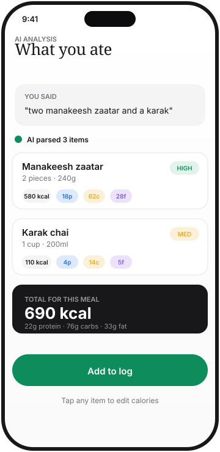

Three steps. That's it.
Most calorie trackers feel like data entry. TrackKcal feels like talking to someone who knows food.
Describe your meal
Type, talk, or take a photo. "Two manakeesh and a karak." Or hold the mic and just say it. Or snap your plate.
AI does the math
Calories, protein, carbs, fat, fiber, sodium, micronutrients. Per item. With a confidence rating so you know how trustworthy the estimate is.
Adjust if needed
One tap to fix portion size or swap an ingredient. Saved to your day. The edit is also saved for next time you log the same food.
Say it your way.
Most logging apps make you pick a food from a list, then pick a portion size, then pick a unit. That's three taps before you even start.
TrackKcal lets you say "two manakeesh zaatar and a karak chai" and that's the whole interaction.
- Voice input via Whisper (the same engine ChatGPT uses)
- Photo input recognizes the food on your plate
- Text input handles abbreviations, slang, and regional names

Trust the math. Or don't.
Every food gets a confidence badge: HIGH, MED, or LOW. High means the AI is pretty sure. Low means there were assumptions we want you to see.
For specific cuts (chicken thigh vs breast), specific brands, or specific cooking methods, more detail in your description gets you higher confidence.
- Confidence is shown on every food, not buried
- You can see the AI's reasoning before saving
- Edit one value once, it sticks for next time

See the real picture.
Daily, weekly, monthly. Macros and micros. Weight trends overlaid on calorie intake. Auto-detected patterns. An AI Nutritionist that knows your history.
Insights unlock as you log more. Logged 7 days? You see weekly averages. 30 days? Pattern detection kicks in. 90 days? Long-term trends.
- Time-range filters: 1D, 1W, 1M, 3M, 6M, 1Y
- Macro and micro breakdowns with reference ranges
- Calorie banking: save surplus, spend on the weekend
- Smart reminders based on when you usually eat

Try it at launch.
iOS and Android. Free during the launch period.